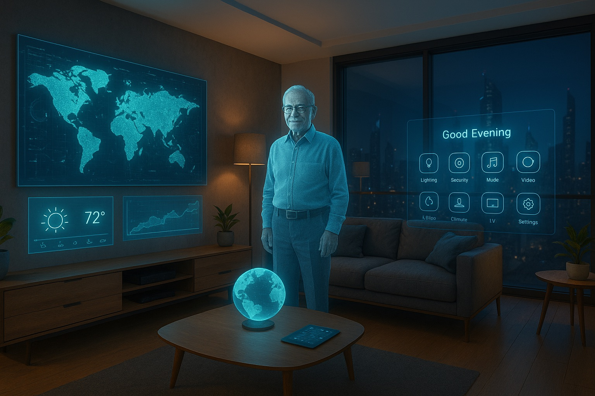
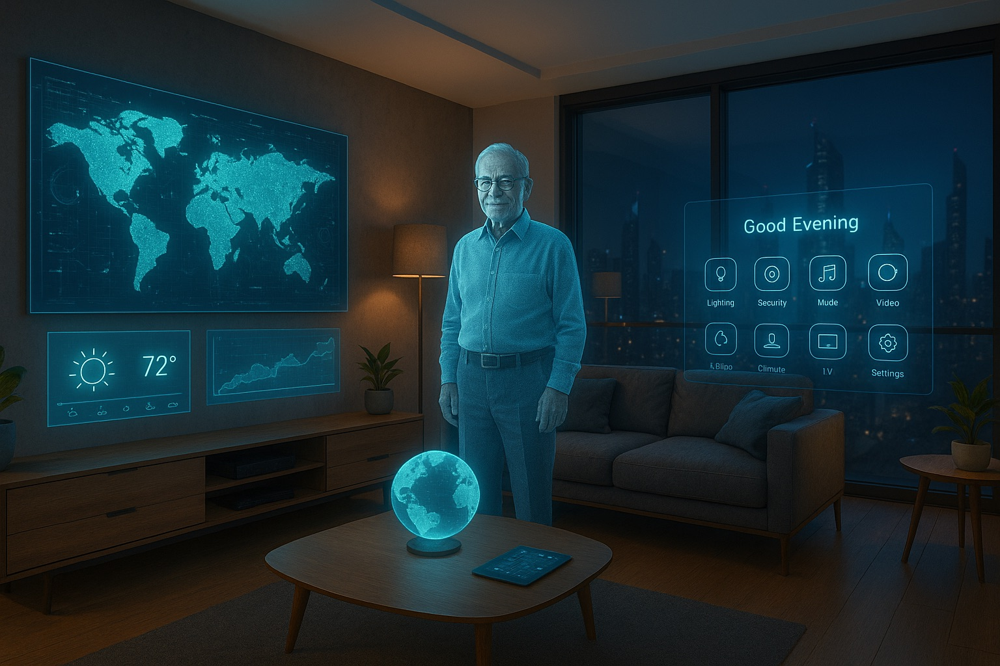
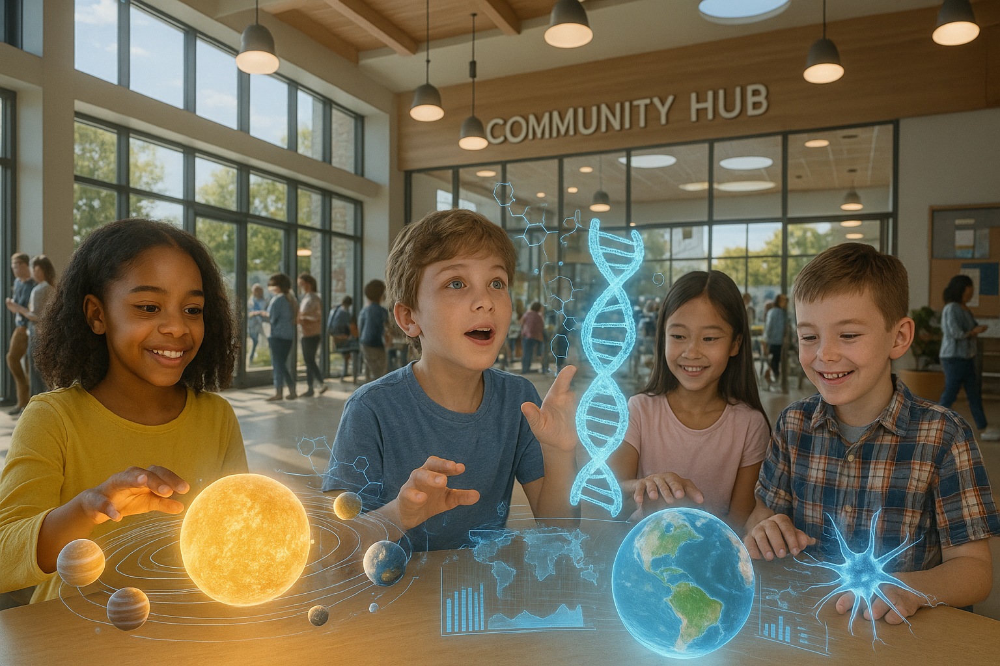
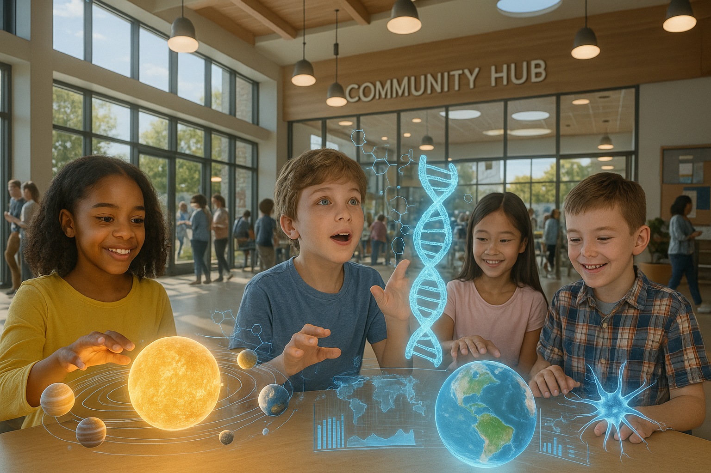
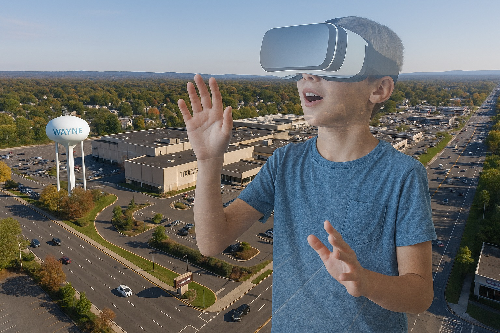
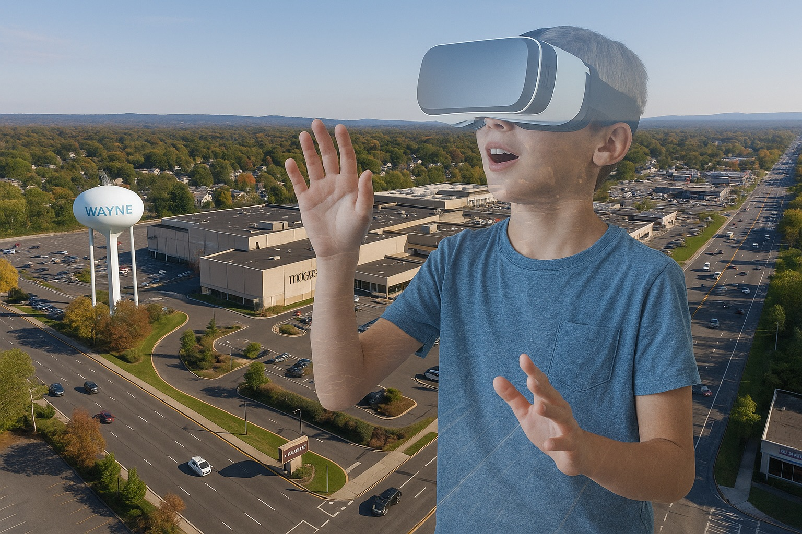
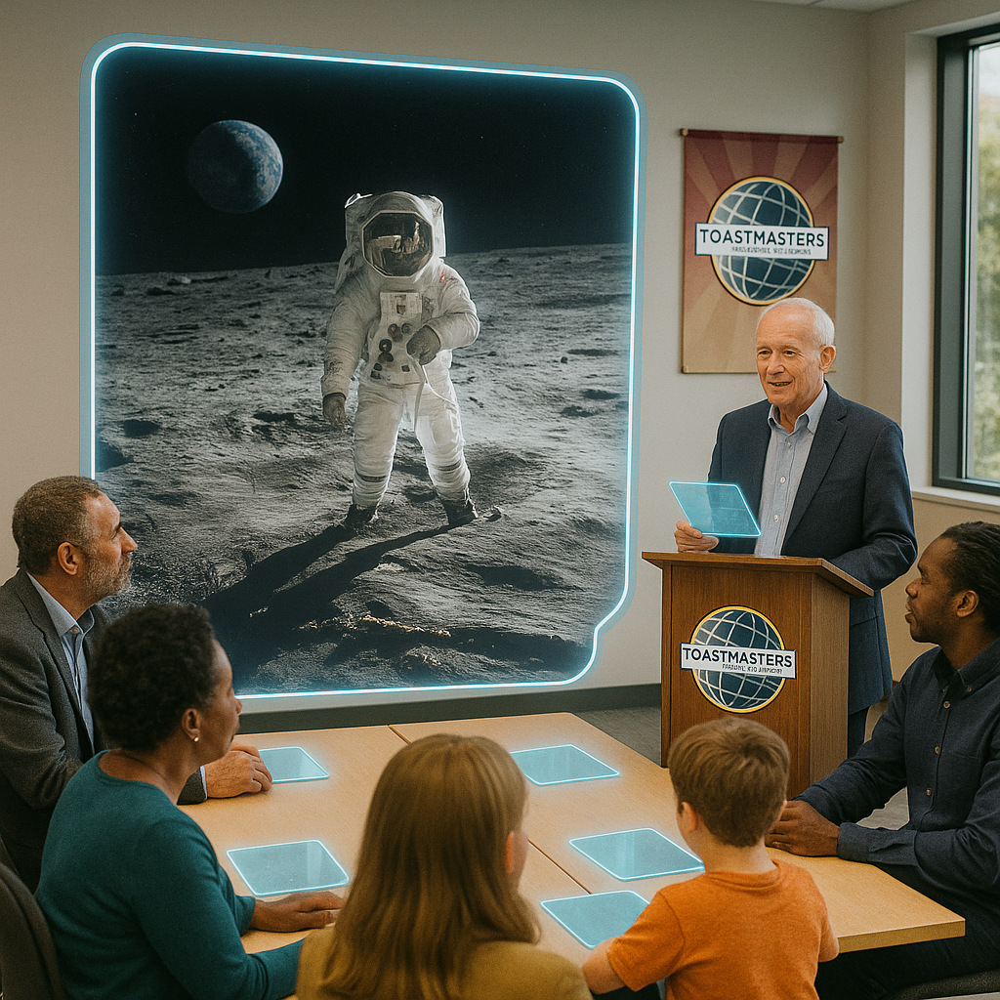
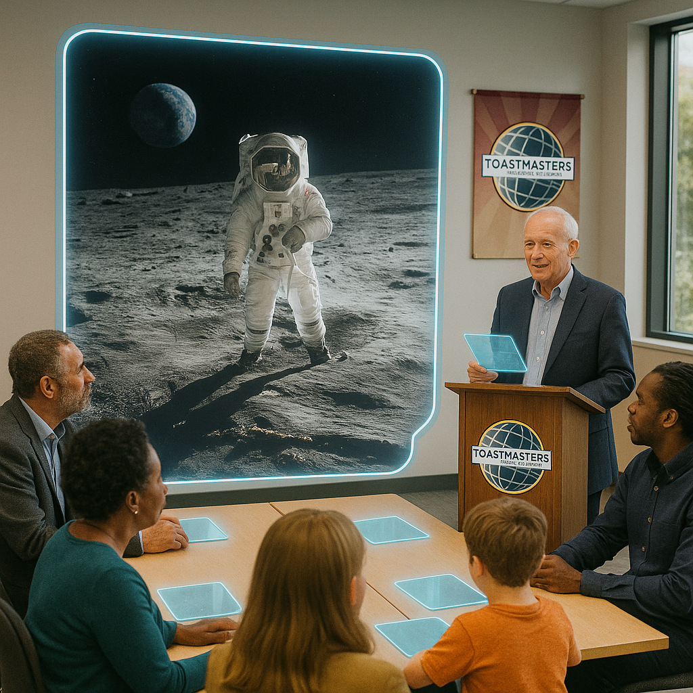
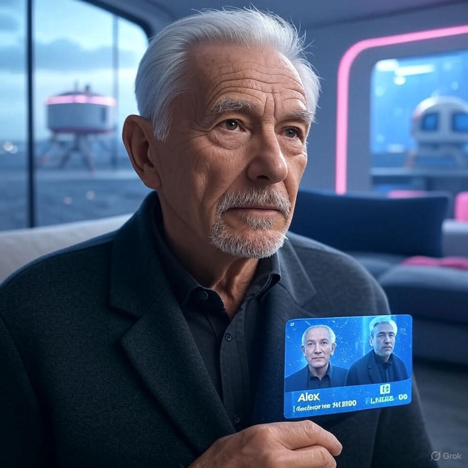

From Wayne to 2090’s Future
Alex’s Toastmasters Icebreaker

My Life in 2090
- Retired data curator, shaping fair AI systems
- Living in Wayne’s smart city hub
- Neural interface, fusion-powered home, community mentor
 

Our World Today
- Climate: Heatwaves, solar shades, carbon capture
- Digital divide: Neural interfaces vs. access gaps
- Mentoring kids to balance tech and humanity
 

Born in 2020: Growing Up Near Wayne
- Suburban fields and malls, pre-smart city
- Parents: Nurse and coder, teaching resilience
- Dreaming of space in VR adventures
 

Finding My Voice at 70
- Seeking unfiltered, human connection
- Physical and virtual club: A 2090 rebellion
- Goal: Lead discussions on lunar expansion, tech equity
 

Thank You, Toastmasters!
Let’s connect—on Earth or the Moon!
Contact: IWW.Alax-CommunityHub.is
